Vietnam National University, Hanoi
University of Engineering and Technology
Trinh Ngoc Huynh
Major: Computer Science (8480101)
Supervisors:
Dr. Tran Quoc Long & Prof. Dr. Ir. Guy Nagels
Master's Thesis Defence — May 30, 2026
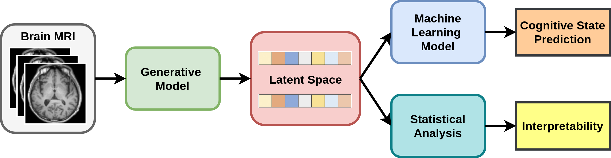
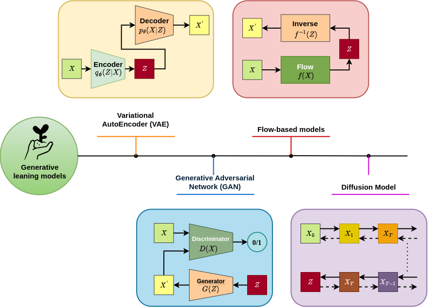
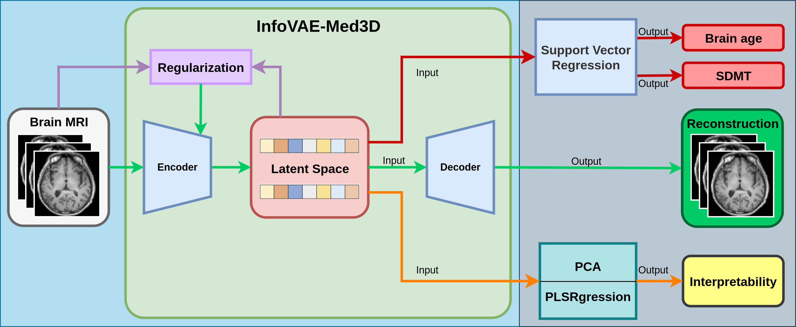
| Model | 📁 Healthy Control | 🏥 Multiple Sclerosis | ||||
|---|---|---|---|---|---|---|
| SSIM ↑ | PSNR ↑ | LPIPS ↓ | SSIM ↑ | PSNR ↑ | LPIPS ↓ | |
| AE[3] | 0.8065 | 24.99 | 0.1395 | 0.7370 | 24.73 | 0.1609 |
| VAE[4] | 0.6269 | 20.38 | 0.2329 | 0.5825 | 20.45 | 0.2500 |
| \(\beta\)-VAE[5] | 0.6642 | 21.39 | 0.2156 | 0.6097 | 21.75 | 0.2362 |
| Ours (\(\alpha=0, \beta=1\)) | 0.8224 | 25.22 | 0.1428 | 0.7762 | 24.54 | 0.1305 |
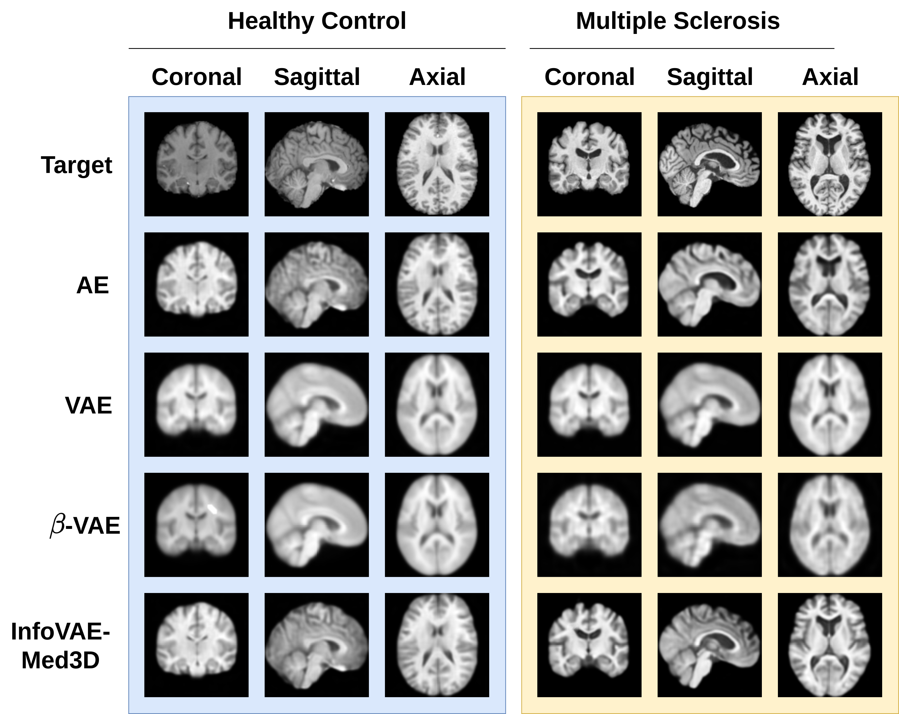
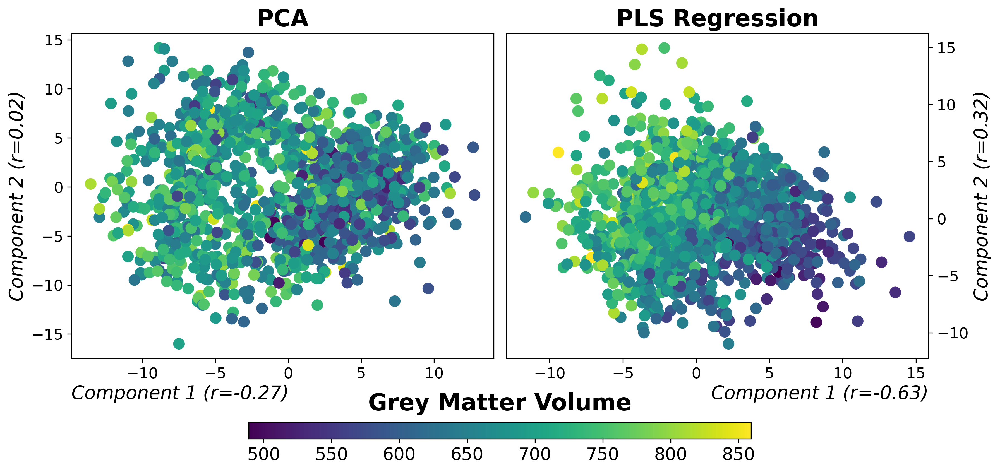
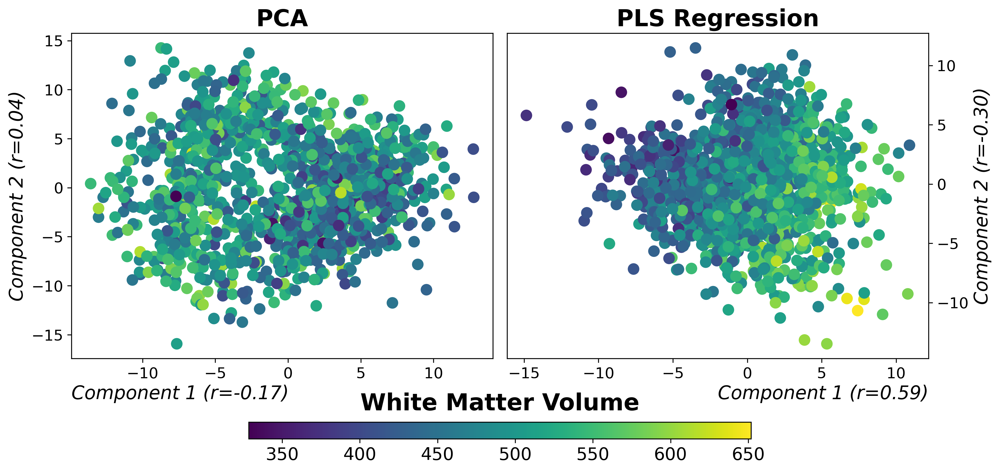
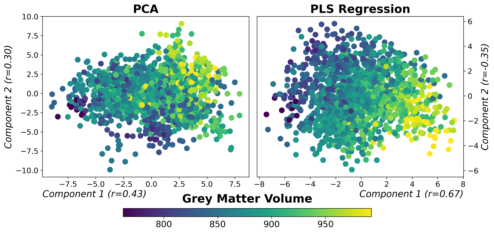
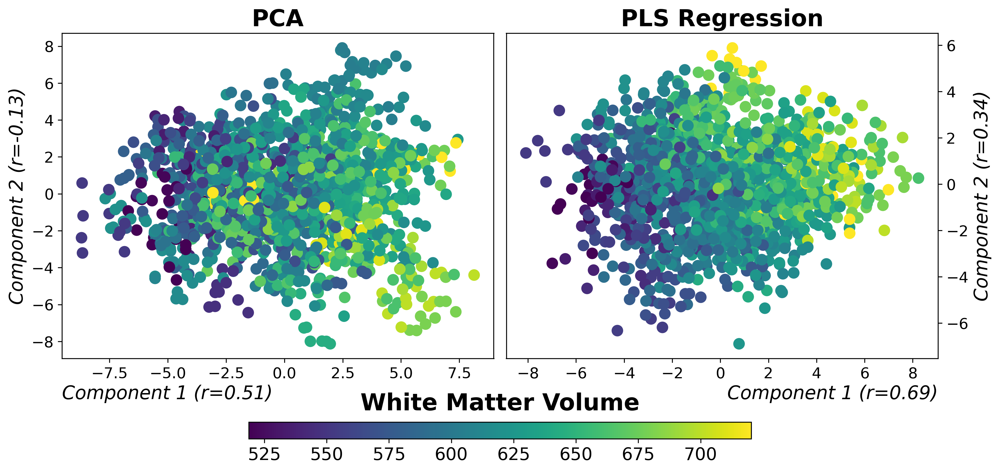
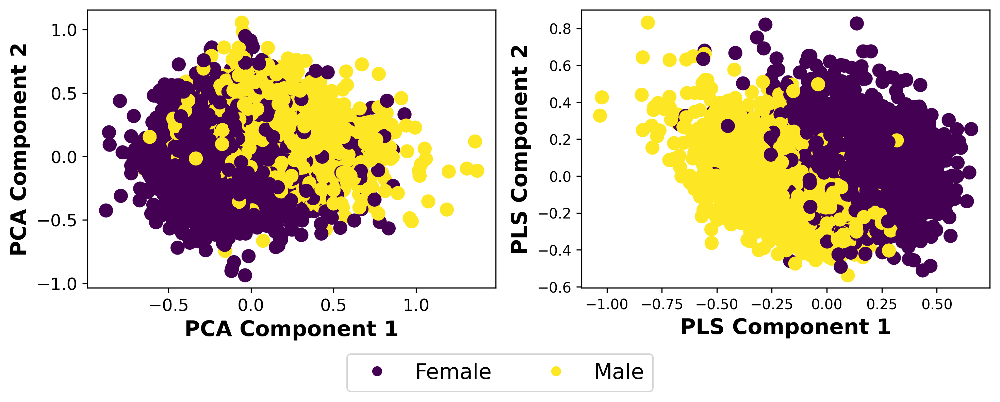
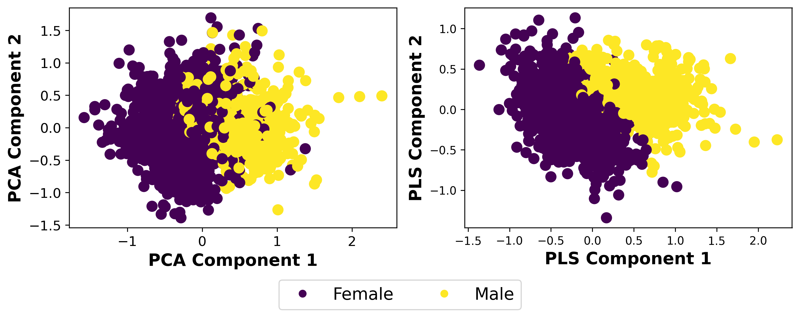
| Model | CI-related Biomarkers (MAE ↓) | ||
|---|---|---|---|
| Healthy Control | Multiple Sclerosis (brain age) | Multiple Sclerosis (SDMT) | |
| RF | 8.192 ± 0.304 | 6.145 ± 0.368 | 8.821 ± 0.384 |
| LR | 6.715 ± 0.351 | 6.314 ± 0.386 | 10.648 ± 0.486 |
| KNN | 8.829 ± 0.336 | 7.313 ± 0.535 | 9.713 ± 0.491 |
| XGB | 7.234 ± 0.345 | 5.929 ± 0.420 | 8.853 ± 0.441 |
| AdaBoost | 7.707 ± 0.261 | 6.055 ± 0.439 | 8.877 ± 0.459 |
| Bagging | 8.195 ± 0.292 | 6.123 ± 0.372 | 8.787 ± 0.428 |
| SVR | 6.553 ± 0.199 | 5.788 ± 0.341 | 8.670 ± 0.453 |
| Model | 📁 Healthy Control | 🏥 Multiple Sclerosis | |||||||
|---|---|---|---|---|---|---|---|---|---|
| brain age | brain age | SDMT | |||||||
| MAE ↓ | R² ↑ | RMSE ↓ | MAE ↓ | R² ↑ | RMSE ↓ | MAE ↓ | R² ↑ | RMSE ↓ | |
| Average | 10.39 | -0.000 | 11.98 | 7.153 | -0.000 | 9.129 | 9.650 | -2.274 | 11.96 |
| Deep Learning Models | |||||||||
| ResNet | 6.484 | 0.541 | 8.221 | 5.691 | 0.406 | 7.112 | 9.132 | 0.095 | 11.42 |
| DenseNet | 6.063 | 0.574 | 7.901 | 5.544 | 0.413 | 6.978 | 9.023 | 0.108 | 11.35 |
| VAE Variants | |||||||||
| AE[3] | 7.346 | 0.422 | 9.112 | 5.704 | 0.399 | 7.078 | 9.220 | 0.056 | 11.62 |
| VAE[4] | 7.862 | 0.201 | 10.71 | 7.094 | 0.010 | 9.081 | 9.622 | 0.020 | 11.84 |
| \(\beta\)-VAE[5] | 7.520 | 0.305 | 9.782 | 6.309 | 0.251 | 7.901 | 9.252 | 0.051 | 11.65 |
| InfoVAE-Med3D | 6.673 | 0.525 | 8.439 | 5.520 | 0.422 | 6.936 | 8.923 | 0.111 | 11.28 |
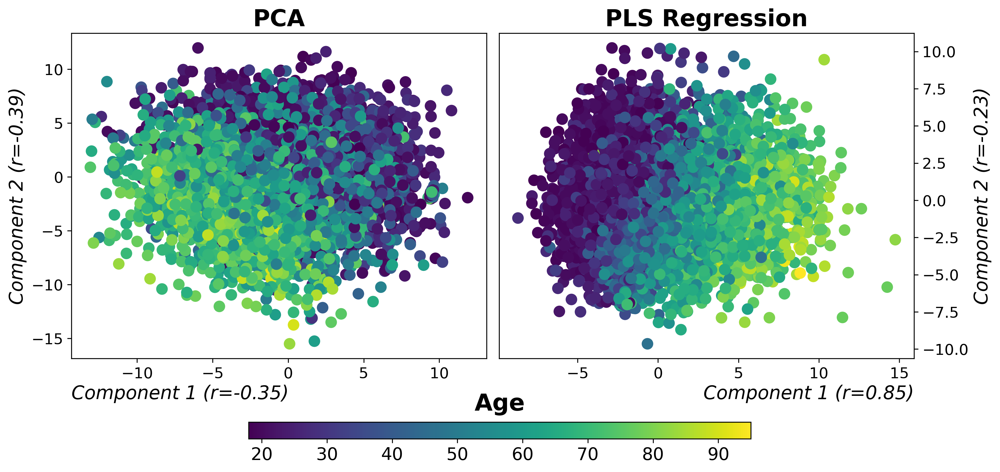
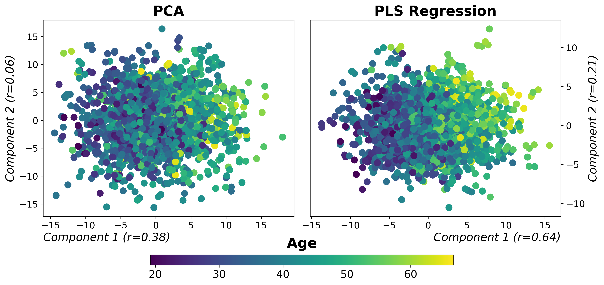
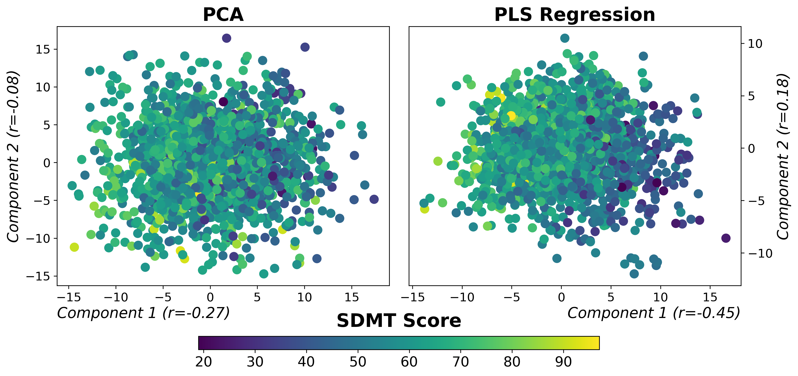
| 1 | Marvin M. Goldenberg. "Multiple sclerosis review". In: Pharmacy and Therapeutics 37.3 (2012), pp. 175–184. |
| 2 | Nancy D. Chiaravalloti and John DeLuca. "Cognitive impairment in multiple sclerosis". In: The Lancet Neurology 7.12 (2008), pp. 1139–1151. |
| 3 | Geoffrey E. Hinton and Ruslan R. Salakhutdinov. "Reducing the dimensionality of data with neural networks". In: Science 313.5786 (2006), pp. 504–507. |
| 4 | Diederik P. Kingma and Max Welling. "Auto-encoding variational bayes". In: International Conference on Learning Representations (ICLR) (2014). |
| 5 | Irina Higgins et al. "β-VAE: Learning Basic Visual Concepts with a Constrained Variational Framework". In: International Conference on Learning Representations (ICLR) (2017). |